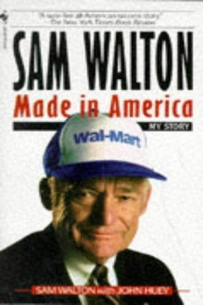

Library › Business & Startups
Sam Walton: Made in America — Summary & Key Lessons

My story — how a small-town dreamer built Walmart by obsessing over customers, costs and people.
📖 OPEN THE FULL INTERACTIVE BREAKDOWN →🌐 Read it in Hindi, Hinglish, Gujarati, Tamil & 22 more languages — free, with audio.
💡 The Big Idea
Sam Walton built the world's largest retailer from one dime store in Arkansas by following stubborn principles: obsess over customers and low prices, control costs like your life depends on it (it did), communicate everything to everyone, swim against the current, and keep every associate invested in the mission. No genius — just relentless execution.
🧠 The 6 Key Lessons
Lesson 1: The Customer Is the Only Boss
Chapter 1: The Beginning
Walton's founding obsession: give customers lower prices and better service than they can get anywhere else, and they will come back. Every decision — location, assortment, hours — was filtered through the customer's eyes. Businesses that manage to their own convenience manage their own decline.
📖 Example: Walton's discount stores were built in small towns that bigger chains ignored, on the bet that locals would drive past 'big city' stores for lower prices closer to home. He was right — the customer, not the competitor, defined the strategy. Read the full example →
⚡ Do this: Run your next product or service decision through one filter: 'Does this make the customer's life cheaper, easier or better?' If none, reconsider.
Lesson 2: Frugality Is a Culture, Not a Cost-Cut
Chapter 2: The Discount
Walton flew coach, shared hotel rooms and ran headquarters in a warehouse — not because he was cheap personally, but because every rupee saved could be a rupee of lower prices. Frugality was a strategic weapon: it kept the business lean and the prices unbeatable. Waste is a tax on the customer.
📖 Example: Wal-Mart's early stores had concrete floors, bare racks and no fancy fixtures — savings passed directly to prices, which passed directly to volume, which passed back into lower costs. The flywheel of frugality beat every competitor with nicer offices. Read the full example →
⚡ Do this: Find one recurring expense in your work that doesn't reach the customer or the product. Cut it and redirect the savings to your value.
Lesson 3: Communicate Everything to Everyone
Chapter 3: The Communication
Walton treated information as oxygen: sales numbers, costs and ideas circulated freely to every associate, and Saturday morning meetings made everyone feel like an owner. Secrecy breeds suspicion and waste; transparency breeds alignment and speed. If your team doesn't know the numbers, they can't help move them.
📖 Example: Wal-Mart's Saturday meetings — part review, part celebration, part pep rally — kept thousands of managers aligned on the same facts. When a problem surfaced in one store, the fix spread nationwide within days. Read the full example →
⚡ Do this: Share one key metric with your whole team weekly, and explain what moves it. Watch problem-solving speed improve.
Lesson 4: Swim Upstream — Conventional Wisdom Is a Parking Lot
Chapter 4: The Strategy
Everyone told Walton discount retail would fail in small towns, that big cities were the only game, that you couldn't grow fast without debt. He did the opposite and won. Following the crowd guarantees average results; contrarian bets, executed well, create the outliers. The herd is comfortable precisely where the money isn't.
📖 Example: While competitors expanded in cities, Walton saturated rural America with stores nobody wanted to serve. When analysts said 'too much, too fast', he kept opening stores — and the early-mover advantage in small towns became a moat competitors never crossed. Read the full example →
⚡ Do this: Identify the 'everyone knows X' belief in your field. Sketch the opposite strategy and test it small — that's where the edge usually hides.
Lesson 5: Goals Need a Date and a Price
Chapter 5: The Goals
Walton was famous for public commitments — 'we will be a billion-dollar company by 1980' — written on his office wall and announced to anyone who would listen. Deadlines convert dreams into marching orders, and public commitment recruits the team. A goal without a date is a wish.
📖 Example: When Walton publicly promised $1 billion in sales years before analysts thought it possible, the entire company organized around the number. They hit it ahead of schedule — not because the target was easy, but because it was concrete and shared. Read the full example →
⚡ Do this: Write your next big goal with a specific date, post it where your team or family can see it, and report progress monthly.
Lesson 6: Humility + Hunger Beats Ego Every Time
Chapter 6: The Legacy
Walton stayed the same modest man at $20 billion that he was at $20 thousand — driving a pickup truck, wearing a baseball cap, asking store clerks for advice. His humility kept him learning and his hunger kept him moving. Ego is the tax successful people pay on their own growth.
📖 Example: Even at the top, Walton visited stores constantly, taking notes from cashiers and stock boys — the people closest to the customer. His 'servant's posture' was not an act; it was the mechanism that kept the giant learning like a startup. Read the full example →
⚡ Do this: Do one 'store visit' this week: talk to the person closest to your customer or user and implement one of their suggestions.
✅ 5-Step Action Plan
- Filter every decision through the customer's benefit
- Cut one waste that doesn't reach the customer
- Share one key metric with your team weekly
- Test one contrarian strategy small
- Write a dated public goal and report monthly
⚠️ When This Doesn't Work
⚠️ When this doesn't work: Walton's relentless cost-cutting had a dark side — famously anti-union, and criticized for squeezing suppliers and small-town economies. 'The customer is boss' can justify dumping external costs on workers and communities. Copy the customer obsession and frugality; don't copy practices that treat people as costs.
💀 The Graveyard Proves It
🏬 Sears — The Original 'Everything Store' That Forgot Itself. Burn: 132 years → bankruptcy. Read the full case study →
💬 Best Quotes from Sam Walton: Made in America
- “There is only one boss: the customer.”
- “Commit to your business. Believe in it more than anybody else.”
- “Swim upstream. Go the other way. Ignore the conventional wisdom.”
Interactive version: mark lessons as read, listen in your language, share quote cards.